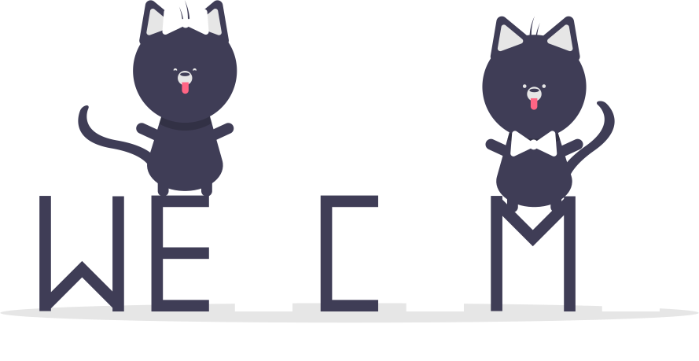
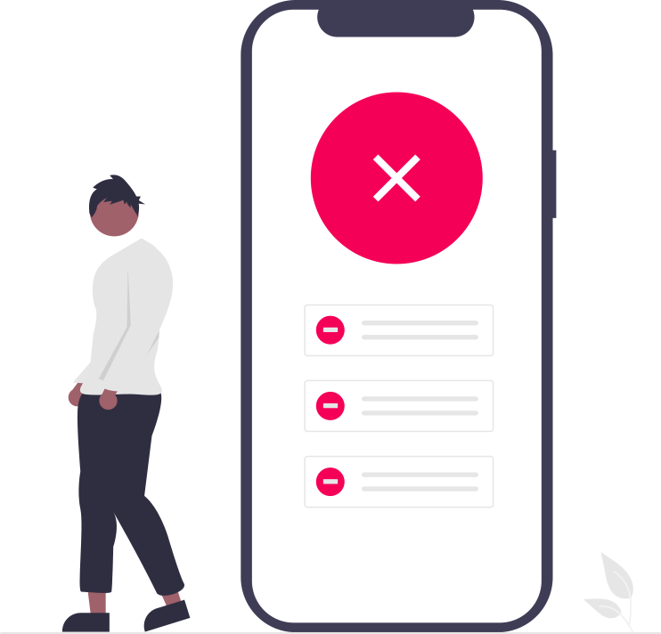

| Nombre completo | Tipo de pases | Check-in restantes | Realizar checkin manual |
|---|---|---|---|
| {{invitado.nombrecompleto}} | {{invitado.tipopases}} | {{invitado.checkinsrestantes}} |
|
¡Bienvenido!
{{ scannedData?.invitado.nombreCompleto }}
{{ scannedData?.invitado.tipoPases }}
{{ scannedData?.invitado.institucion }}
Da click en la imagen para escanear el código QR para confirmar la asistencia al evento.

¡Bienvenido!
{{ scannedData?.invitado.nombreCompleto }}
Invitado {{ scannedData?.invitado.tipoPases }}
{{ scannedData?.invitado.institucion }}

¡Bienvenido al Evento!

¡ERROR!
{{ mensajeError || 'Ocurrio un error' }}